Hablaremos del BMP280, un sensor digital de presión y temperatura con comunicación I2C y SPI. Interpretar la lectura no es fácil, veremos los algoritmos que nos proporciona el fabricante y su API. Lo conectaremos a la Raspberry y registraremos la presión durante unos días. Para terminar estudiaremos las variaciones debidas a la llamada marea barométrica y los registros durante una breve tormenta.
| 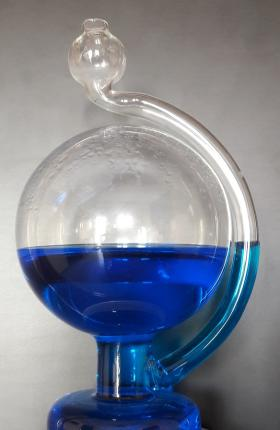 |
| Botella barométrica o barómetro de Goethe. EyC. |
{kind=link}
Hasta el siglo XVI, la ciencia que se enseñaba en las universidades, la ciencia de verdad, en la que creía todo el mundo sin discusión, era la física aristotélica. Entonces llegó Copérnico y nos mostró que, a veces, las verdades bien establecidas y enseñadas durante generaciones no son ciertas. Llegó Francis Bacon y nos enseñó que la ciencia y la dialéctica son cosas distintas; y que algo no es verdad tan sólo porque sea razonable. Galileo nos explicó cómo hacer experimentos y ayudarnos de los números para proceder. Newton recorrió ese camino para sintetizar la nueva ciencia de la época en su obra culmen -que todos conocéis-, enterrando para siempre la física aristotélica.
Esta revolución ocurrió a lo largo del s.XVII, y cambió el modo de hacer ciencia a partir de entonces. Contribuyó a ello sin duda el descubrimiento de que el aire es material, que de hecho ofrece resistencia a los cuerpos que caen y, sobre todo de que el aire pesa.
Todo comenzó cuando alguien intentó bombear agua de un pozo de más de 10 metros de profundidad... y vio que no se podía.
| 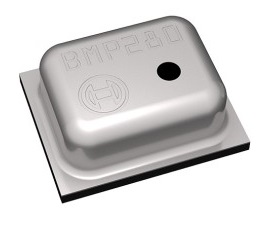 |
| Sensor barométrico BMP280. Bosch. |
{kind=link}
El sensor
El BPM280 es un sensor fabricado por Bosch para medir presión y temperatura ambiental. Pertenece a la gama Sensortec. Hay otro sensor parecido, el BME280 (acabado en E, en lugar de en P). Mide presión, temperatura y también humedad. En eBay están casi al mismo precio. Pero si lo compráis sabed que algunos fabricantes envían por error el modelo P, que sólo mide presión y temperatura. BMP280 vs. BME280 sensor confusion.
El BMP280 puede comunicarse tanto por I2C como por SPI. Dependiendo de si el pin CSB está a nivel alto o bajo. Un fallo habitual es dejar el pin CSB al aire, o con una resistencia de pull-up muy débil. Algún transitorio podría llevar el pin a nivel bajo. Cuando eso sucede, queda inhabilitada la comunicación por I2C hasta que se retire la alimentación. En ocasiones, el chip parece bloquearse y dejar de responder sin previo aviso, esta podría ser la causa.
Usar este dispositivo con la Raspberry es muy sencillo: basta conectarlo a los pines I2C, habilitar i2c, descargar las librerías apropiadas de C o de Python y tirar con el ejemplo.
¡Ya está! ¿Para qué complicarse? Fin del tutorial.
| We live in a happy world. Pinterest. |
{kind=link}
Ahora bien, si buscas el detalle tecnológico, si te preguntas qué pasa dentro de esas librerías... si encuentras el camino más interesante que el destino, sigue leyendo... y prepárate.
En esta página (https://www.bosch-sensortec.com/bst/products/all_products/bmp280) tenemos toda la información del BMP280. En la sección de descargas está el datasheet, y también el "driver".
Voy a empezar por conectar el integrado a los pines 10 y 11 (numeración de WiringPi). Dichos puertos no poseen I2C por hardware nativo. Utilizaré las librerías de emulación I2C software wPi_soft_I2C.
Primeramente, debemos asegurarnos de que el chip está conectado y responde. Lo haremos escaneando el bus con la utilidad de línea de comandos i2cli:
pi@raspberrypi:~/bmp280/soft_i2c$ ./i2cli 10 11
I2C Command Line Interface
I2C ready. SCL: 10, SDA: 11
Valid commands are:
...
C: sCan
q: quit
i2cli > C
* Device found at 76h (R: ed, W: ec)
i2cli >
Sí, la dirección 76h es lo esperado. El chip funciona. Procedemos a leer o escribir algún registro. Por ejemplo el ID de dispositivo, localizado en la dirección D0h. En la entrada titulada El bus I2C a bajo nivel tenéis descrito el procedimiento para leer o escribir un byte manualmente.
De forma resumida: se llama al chip con su dirección de escritura y se escribe la dirección donde está el registro a leer. A continuación llamamos al chip con su dirección de lectura, y leemos un byte.
i2cli > C
* Device found at 76h (R: ed, W: ec)
i2cli > s ; start
i2cli*> wec ; dirección del chip para escritura
ec -> ACK
i2cli*> wd0 ; dirección del registro
d0 -> ACK
i2cli*> s ; restart
i2cli*> wed ; dirección del chip para lectura
ed -> ACK
i2cli*> r ; comando de lectura
r -> 58
El integrado se identifica como 58h, propio del BMP280. Si fuera el BME280 habría devuelto 60h. Esta es la forma más fiable de identificar cuál es el modelo de nuestro sensor.
La complejidad del BMP280 radica en su elevado número de registros, un total de 35:
- 3 registros para la presión (20 bytes)
- 3 registros más para la temperatura (20 bytes)
- 5, para configuración y operaciones varias
- y 24, 24 registros, contienen los datos de calibración interna
| 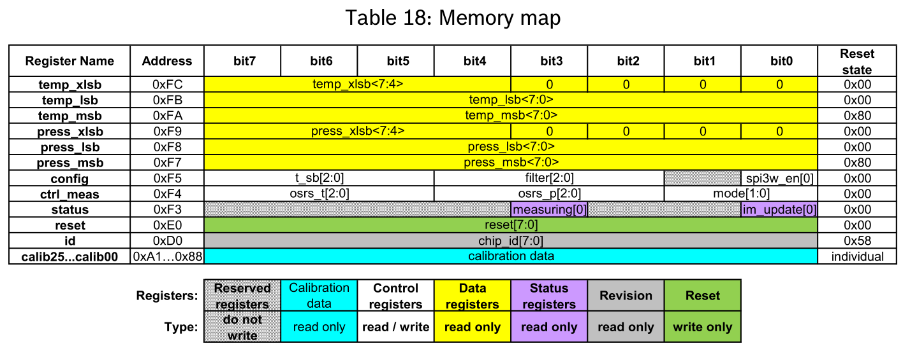 |
| Mapa de memoria del BMP280. Datasheet. |
{kind=link}
¿Qué se hace con todos estos datos?
Primero, se configuran las opciones del sensor fijando los valores apropiados en los registros de configuración. Luego se descarga uno los datos de calibración y se los guarda. Después, recuperamos los 6 registros con los valores de presión y temperatura.
Y a partir de ahí, obtenemos la lectura real con un sencillo cálculo guiados por el ejemplo del datasheet:
| 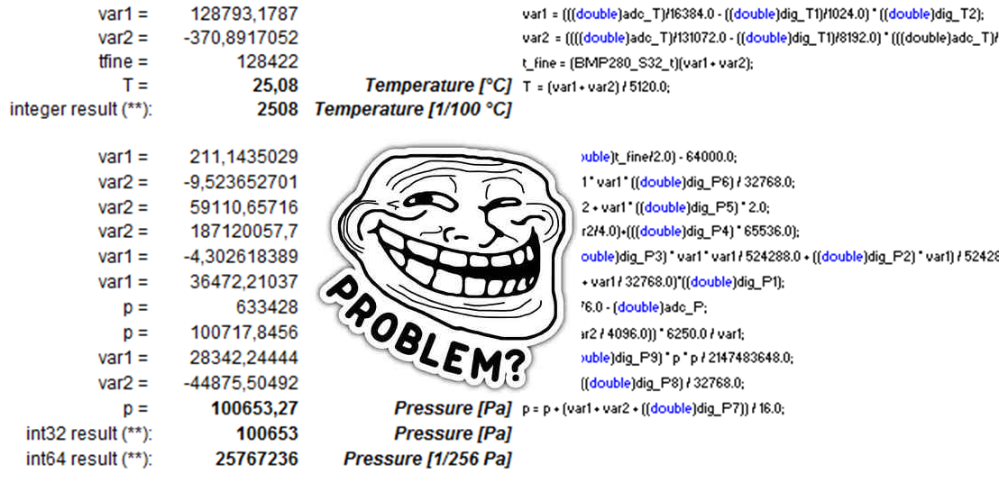 |
| La lectura real se obtiene mediante un sencillo cálculo. |
{kind=link}
El fabricante nos proporciona un driver ya listo con este algoritmo implementado de forma eficiente. Pero antes de usarlo, comprendámoslo.
El algoritmo
Los barómetros, por lo general se encuentran influidos por la temperatura ambiente. Es muy fácil de ver en un tipo de barómetro llamado barómetro de Goethe; más conocido en eBay como Glass Barometer Weather Forecast Rain Shine Bottle.
| Botella barométrica. El extremo superior está abierto. EyC. |
{kind=link}
Primero llenamos la botella de líquido. El nivel en el brazo lateral, cuyo extremo superior está abierto, alcanza una determinada altura. La presión dentro de la esfera interior no puede variar. Así pues, cuando aumenta la presión exterior, entra por el extremo abierto y empuja el líquido hacia abajo. Y si la presión atmosférica desciende, es la presión dentro de la esfera la que empuja el líquido a subir.
Es decir, que cuando la presión aumenta el nivel baja, y cuando la presión disminuye el nivel del líquido aumenta. Es una idea estupenda si uno no tiene en cuenta la temperatura.
Porque cuando la temperatura aumenta, tanto el agua como el gas contenido en la esfera cerrada se expanden, ocupando más volumen. Por tanto la presión en la esfera aumenta y empuja el líquido hacia arriba. Exactamente igual que si la presión desciende.
Líquido bajo: ha subido la presión o hace más frío.
Líquido alto: ha bajado la presión o hace más calor.
La lectura del barómetro siempre debe compensarse con la del termómetro. Por eso es común ver juntos barómetro y termómetro.
| 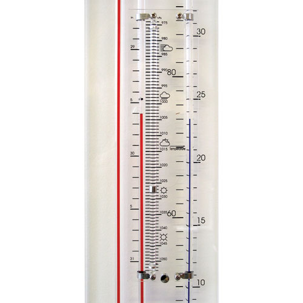 |
| Barómetro y termómetro juntos. Amazon. |
{kind=link}
Con frecuencia, omiten la tabla de compensación en los barómetros de interiores, donde se supone que el rango de temperaturas está acotado. El BMP280 introduce la compensación de temperatura dentro del algoritmo de lectura.
No he podido encontrar documentos de Bosch explicando el cálculo, por lo que intentaremos hacernos una idea del cálculo operando matemáticamente y reordenando los términos hasta llegar a alguna expresión reconocible.
Según podemos ver, se compone de dos funciones, una para la temperatura y otra para la presión.
Empezaremos por la temperatura. Miramos la función bmp280_comp_temp_double del API oficial en GitHub. Cito aquí las líneas más relevantes.
var1 = (((double) uncomp_temp) / 16384.0 - ((double) dev->calib_param.dig_t1) / 1024.0)
* ((double) dev->calib_param.dig_t2);
var2 = ((((double) uncomp_temp) / 131072.0 - ((double) dev->calib_param.dig_t1) / 8192.0)
* (((double) uncomp_temp) / 131072.0 - ((double) dev->calib_param.dig_t1) / 8192.0))
* ((double) dev->calib_param.dig_t3);
dev->calib_param.t_fine = (int32_t) (var1 + var2);
temperature = (var1 + var2) / 5120.0;
Lo primero en que me fijaría es en las variables de entrada y salida: uncomp_temp es la lectura en crudo. Además, tenemos como dato los parámetros de calibración dig_t1, dig_t2 y dig_t3. Con esto calculamos la temperatura temperature como tal, más un parámetro adicional de calibración llamado t_fine. Es el que se usará después para compensar la lectura de presión.
Lo segundo, me fijaría en las constantes: 1024, 8192, 16384, 131072... casi todo son potencias de 2, salvo el 5120 (pero casi: 512 por 10).
Claramente recuerda a la aritmética de coma fija. Repasémosla brevemente. Supón que quiero sumar dos números no enteros: por ejemplo 2.3 y 6.5, el resultado es 8.8.
Ahora en un microcontrolador. Podría usar aritmética de coma flotante directamente, por supuesto:
int main () {
float a = 2.3;
float b = 6.5;
printf("Suma: %f\n", a + b);
}
Lo cual sería estupendo si nuestro procesador puede usar una Unidad de Punto Flotante, bien externa, o bien incluida en la arquitectura de la CPU. Si no tenemos, entonces el compilador incluirá todo el código necesario para emularlo las operaciones por software. Y eso, amigos, nos ocupará una buena cantidad de ROM y bastantes ciclos de reloj.
Mira lo que pasa en un microcontrolador PIC de gama baja al sumar dos números en coma flotante:
| 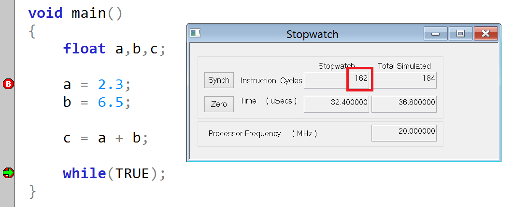 |
| Suma de dos números de precisión sencilla en un PIC 12F, 162 instrucciones. EyC. |
{kind=link}
¡162 instrucciones! 162 instrucciones por cada suma. ¡Casi 32us para la operación aritmética más simple: sumar dos números!
¿Qué tal si en vez de sumar 2.3 más 6.5, sumamos 23 más 65? Ahora la operación se convierte en suma de enteros, dando 88. Eso sí, debemos dividir el resultado entre 10 cuando vayamos a presentarlo al usuario.
| 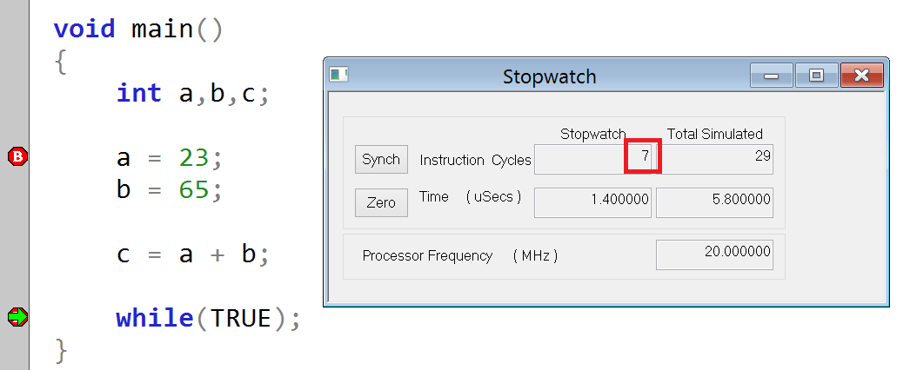 |
| Suma de dos números enteros en un PIC 12F, 7 instrucciones. EyC. |
{kind=link}
Sólo 7 instrucciones. Varias de las cuales habrán sido para asignar a registros los valores de a y b, y otras tantas para operar con dos registros de 8 bits juntos como si fueran uno de 16.
El caso ahora es dividir entre 10. ¿No estamos ante el mismo escenario de coma flotante? Sí, pero la división sólo la haremos al final, a la hora de mostrar el resultado al usuario por pantalla por ejemplo. Mientras, durante el cálculo -que seguro es más complejo que una suma- habremos usado todo el tiempo aritmética entera.
El factor 10 se conoce con el nombre de factor de escala.
En realidad no usamos potencias de 10 -fáciles para nosotros- sino potencias de 2 -fáciles para un micro-. Porque, igual que para nosotros multiplicar o dividir por potencias de 10 es correr la coma a la izquierda o a la derecha, en binario multiplicar o dividir por potencias de 2 es desplazar todos los bit a la izquierda o a la derecha.
Sigamos con los números del ejemplo anterior. Queremos escalar 2.3 a una potencia de 2. He hecho una tabla para el cálculo. La he compartido y podéis verla aquí. Este sería el error cometido en función del factor de escala:
| 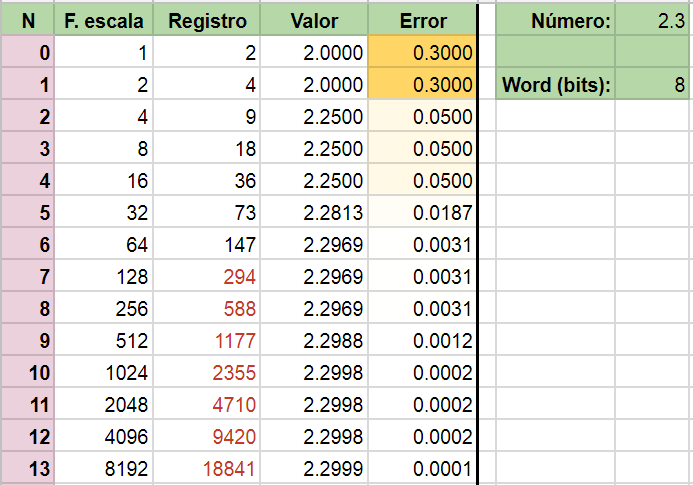 |
| Escalado de un número decimal a una potencia de 2 con un tamaño de 8 bits. EyC. |
{kind=link}
Si el tamaño de entero del procesador fuera 8 bits, no podremos escalarlo más allá de 256 que es el valor máximo. Meteríamos en el registro el valor 147 y nuestro factor de escala sería 64. Lo cual nos daría un error de 3 milésimas.
Todo hay que tenerlo en cuenta a la hora de operar. Por eso aparecen en el algoritmo tantos factores en forma de potencia de dos. A continuación voy a llevarme las constantes que multiplican o dividen y dejarlas en los parámetros de calibración.
Seguimos con el ejemplo de la página 23 del datahseet. Dado el valor leído de la temperatura y los parámetros de calibración t1, t2 y t3. Procedemos a reescalarlos y operar. El algoritmo ahora es más fácil de ver:
t = 519888; % lectura
% Calibración (dato)
t1 = 27504;
t2 = 26435;
t3 = -1000;
% Escalado de parámetros
t = t / 2^14;
t1 = t1 / 2^10;
t2 = t2 / 2^9;
t3 = t3 / 2^15;
% Cálculo (algoritmo desnudo)
t = t - t1;
temp = t * t2 + t^2 * t3;
% Resultado final
temp = temp / 10
% temp = 25.0825
El primer parámetro de calibración t1 se utiliza para corregir la temperatura inicial. Y los dos siguientes t2 y t3, entran en una corrección polinómica de segundo grado. A la hora de mostrar el resultado, se debe dividir entre 10.
Para la presión, las operaciones son más enrevesadas. Entran a formar parte del cálculo 9 parámetros de calibración divididos en tres grupos, además del calculado anteriormente a partir de la temperatura. Nos llevamos de nuevo las constantes a los parámetros y operamos. Así vemos la forma del algoritmo:
p = % valor leído
a = 40 * (temp - 25);
dilatacion = a^2 * p6 + a * p5 + p4
compensacion = (a^2 * p3 + a * p2 + 1) * p1
p = ( 2^20 - p - dilatacion ) * 6250 / compensacion
correccion = p^2 * p9 + p * p8 + p7
p = p + correccion
Lo primero, hemos creado una variable a donde entra la corrección en temperatura. La desviación fija de 25º nos recuerda a las condiciones estándar de presión y temperatura según la IUPAC. No encuentro significado para el factor 40.
En mi interpretación del algoritmo, yo diría que el calor influye sobre el BMP280 de dos maneras distintas. Por un lado dilata el material y aumenta la lectura, y por otro lado ablanda la escala haciendo que pequeños incrementos de presión se noten como si fueran mayores.
El primer efecto lo corregimos con un parámetro llamado dilatacion. Este valor está modelado por un polinomio de segundo grado cuyos parámetros son los valores de calibración p4, p5 y p6.
El segundo efecto lo he llamado compensacion y viene modelado por otro polinomio también de segundo grado con los factores p1, p2 y p3.
La presión leída se resta del valor máximo (2 elevado a 20 porque el registro es de 20 bits) y se le resta a su vez el aumento por dilatación. El resultado se divide por el valor de compensación de escala obtenido anteriormente.
Al igual que con la temperatura, para obtener el valor exacto de presión, este número lo introducimos en un polinomio de ajuste, llamado correccion dado por los parámetros p7, p8 y p9. La presión final se corrige de acuerdo a este resultado.
Si te has perdido durante la explicación, es lógico. Aquí está el fichero con un algoritmo equivalente al del fabricante: bmp280_alg.m
¿Por qué el fabricante nos lo da ofuscado? La palabra clave aquí es rendimiento. Se aprecia el esfuerzo de los ingenieros de Bosch. Le han dado muchas vueltas para que un cálculo tan complejo pueda ejecutarse en un microcontrolador simple sin FPU con un rendimiento y pérdida de precisión aceptables. Es un trabajo nada sencillo, y seguro que les ha llevado muchas horas.
En su API, el fabricante nos ofrece funciones para calcular la temperatura con coma fija de 32 bits y en coma flotante. Para la presión nos da la opción de usar coma fija con registros de 64 bits o coma flotante.
He preparado una tabla con los tiempos en segundos con y sin optimizaciones del compilador, para 10 millones de iteraciones en una Raspberry Pi 3.
| 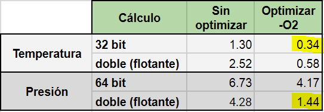 |
| Rendimiento de las funciones en una Raspberry Pi 3. 10M iteraciones. Tiempo en segundos. EyC. |
{kind=link}
En el cálculo de la temperatura, la aritmética de punto fijo supera a la de coma flotante. En cambio, si nos vamos al cálculo de la presión, es al revés, la aritmética de 64bits es más lenta que la coma flotante. ¿Por qué?
La respuesta está tanto en la arquitectura ARM como en el sistema Operativo.
Mientras la Raspberry Pi 3 tiene un core ARMv8, el sistema operativo Raspbian es una versión para 32 bit. Esto hace que el procesador trabaje emulando la arquitectura ARMv7, de 32bit. Resulta que la arquitectura ARM sí tiene unidad de punto flotante. Es decir, para trabajar con registro de 64 bits, el compilador debe unir dos de 32 y operarlos como un todo. Mientras las operaciones en coma flotante se ejecutan nativamente en la FPU, más rápida.
A la vista del resultado, utilizaremos las funciones de doble precisión.
API en C, driver del fabricante
Dada la complejidad de configuración y de lectura del BMP280, el fabricante nos ofrece un API con rutinas listas para usar. Está en GitHub: BMP280 sensor API.
Si bien tiene todo lo necesario para interactuar con el sensor, requiere programación por nuestra parte. No es una librería completa en el sentido de compilar y listo. Nos dicta la interfaz para una rutina que escribirá por el puerto I2C o SPI, pero no la implementa. Esto, que es común en otros lenguajes como Java, es menos frecuente verlo en C. Vamos a explicar cómo hacer funcionar el API con nuestra librería de I2C.
Para empezar, el usuario tiene que proporcionar tres funciones:
- Una función que escriba un número de bytes utilizando el puerto I2C.
- Una función que lea un número de bytes utilizando el puerto I2C.
- Una función que espera un número de milisegundos.
Si os fijáis, estas son las funciones más ligadas al hardware. Mientras el cálculo y procesamiento son prácticamente C estándar y sirven para cualquier sistema, la forma de enviar un byte por I2C varía mucho entre un PIC y una Raspberry. Se hace así para no ligarse a un procesador concreto.
La interfaz necesaria para las dos primeras funciones la encontramos en las líneas 284 a 288 del fichero bmp280_defs.h.
/*! @name Function pointer type definitions */
typedef int8_t (*bmp280_com_fptr_t)(uint8_t dev_id, uint8_t reg_addr,
uint8_t *data, uint16_t len);
typedef void (*bmp280_delay_fptr_t)(uint32_t period);
La primera línea define un puntero a una función que devuelve un entero de 8 bits, y recibe estos parámetros:
- dev_id: Dirección I2C del dispositivo, es la dirección I2C donde está escuchando el chip.
- reg_addr: Dirección del primer registro para la operación de escritura o lectura.
- data: Puntero a un buffer con la secuencia de bytes a escribir o donde guardaremos los bytes leídos.
- len: Número de bytes por escribir o leer.
La segunda línea define un puntero a otra función que no devuelve nada (void), y recibe un sólo parámetro de tipo entero de 32 bit sin signo. Es el periodo de espera en milisegundos.
Aunque el código puede ser largo se sigue fácilmente. Las podéis ver en read_bmp280.c líneas 30 a 57 y en líneas 61 a 94.
Si en lugar de I2C por software prefieres usar I2C nativo o SPI, deberás programar tus propias funciones que hagan esto mismo. De igual modo, si estás usando otro hardware en lugar de Raspberry, tal como por ejemplo Arduino o PIC, estas funciones cambiarán un poco.
No se indica el valor del entero de 8 bit que deben devolver. Del código deducimos que si todo va bien deben devolver la constante BMP280_OK, y en caso de problemas devolver la constante BMP280_E_COMM_FAIL. La API se encargará de tratar los errores convenientemente.
Hasta aquí la parte más difícil. Ahora le pasamos al API un puntero a cada una de las tres funciones, con eso rellenamos los huecos y podemos empezar a usarla.
Comprobaremos el correcto funcionamiento recuperando el ID de dispositivo. Ya lo obtuvimos antes manualmente y sabemos que es 0x58. Eso es precisamente lo que hacemos en test_bmp280_api.c.
En dicho programa escribimos nuestras funciones de comunicación personalizadas. Inicializamos la librería WiringPi y la emulación I2C por software. Y de la línea 115 en adelante, configuramos el API y llamamos a la función de inicialización. Si todo ha ido bien, esta llamada rellenará el ID de dispositivo .
| 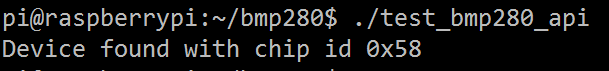 |
| El ID del BMP280 es 58h. EyC. |
{kind=link}
A partir de aquí, se trata de experimentar con distintas configuraciones o filtros siguiendo la documentación.
Valores de la presión
La primera lectura del BMP280 nos puede parecer un tanto extraña. Si hemos usado el API de cálculo en coma flotante, el resultado será algo como 94394.834489. El valor ya está directamente en Pascales. La presión atmosférica se da en hectopascales (hPa) o milibares, que es lo mismo. Es simplemente dividir entre 100, redondeando 944 hPa.
Si sabes algo del tema, te sonara que el valor estándar es 1013 mbar. ¿944 no parece demasiado bajo?
Recuerda que el sensor nos muestra el valor absoluto. Y varía con la altura. El dato de 1013 hPa se toma como la presión media a nivel del mar, es decir a una altura de 0 m. Como estamos más altos, nuestra lectura es menor.
Por ejemplo, 1000 hPa es una presión baja en una ubicación cercana al mar, pero alta para un terreno elevado. Sabiendo nuestra altura sobre el nivel del mar, podemos calcular aproximadamente la presión media esperable por la altura.
| 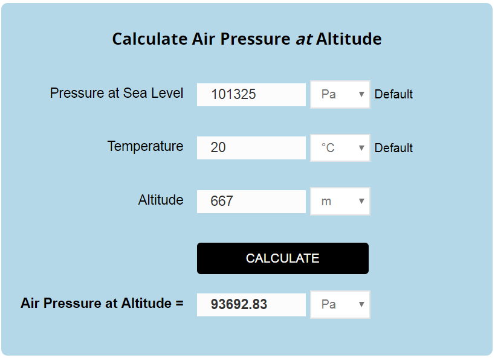 |
| Presión en función de la altura. Fuente. |
{kind=link}
Madrid está de media a 667 m sobre el nivel del mar, lo cual corresponde a unos 937 hPa. Luego el valor 944 que nos parecía muy bajo, es hecho 7 milibares superior a la presión media. Diríamos que, con referencia al nivel del mar estaríamos a 1020 mbar (los 1013 estandar más el exceso de 7 mbar).
Como la presión varía con la altura de forma muy lineal, se puede usar un barómetro para determinar la altura a la que vuela un avión. Se llama altímetro barométrico.
| 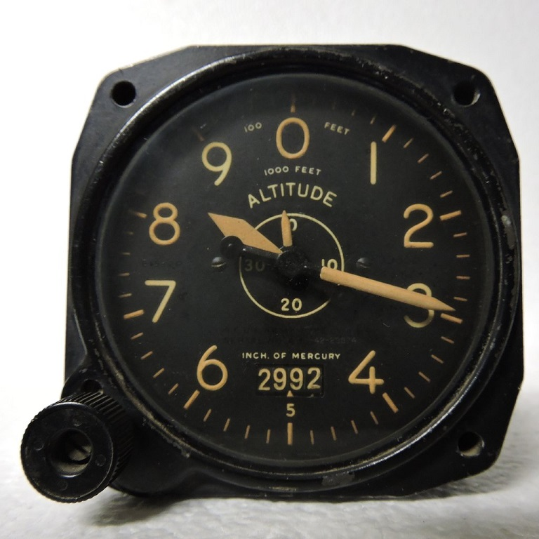 |
| Altímetro barométrico. aeroantique.com |
{kind=link}
Pero la presión sube y baja según el día, ¿cómo afecta eso a los aviones? Pues en el caso más simple, cuando estás en tierra, ajustas el altímetro hasta que marca la altitud conocida del aeródromo. Y para las aeronaves en vuelo, los aeropuertos transmiten continuamente el dato de la presión atmosférica mediante los servicios VOLMET y ATIS. Al aproximarte al aeropuerto escuchas el dato de la presión (QNH) y ajustas el altímetro de acuerdo a la existente en la zona en ese momento.
En la foto del altímetro anterior, fíjate en el número 29.92. Es el valor de ajuste. 29,92 pulgadas de mercurio. Pasando las pulgadas a milímetros, resulta 760 mm de mercurio (mmHg).
El milímetro de mercurio fue la primera unidad usada para medir la presión atmosférica. 760mm fue la altura que alcanzó el mercurio en el experimento de Torricelli. Si en vez de mercurio usáramos agua, 13.6 veces menos densa, la altura llegaría a los 10.34m... ni un centímetro más. Y por eso es físicamente imposible sorber agua de un pozo de más de 10.34m de profundidad.
Variaciones de la presión
Volvemos a nuestro programa de registro read_bmp280.c. Esta es la evolución de la presión, tomada a intervalos de 1 segundo, durante los últimos días.
| 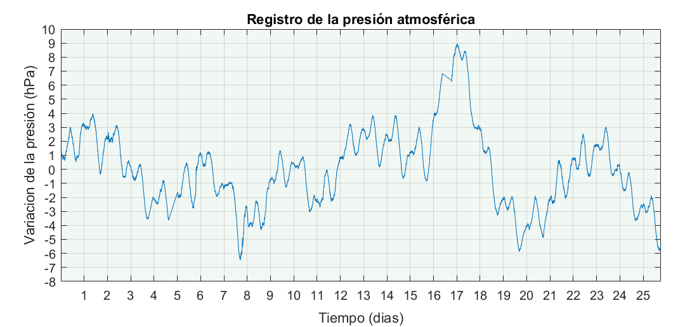 |
| Registro de la presión atmosférica local. Click para ampliar. EyC. |
{kind=link}
En el gráfico, el tiempo está expresado como medida relativa, no absoluta. El día 1 no significa el primer día de mes, sino el primer día de registro. La presión también se expresa como variación sobre la media. Como pasa con muchas variables, el dato absoluto apenas significa nada, son sus variaciones lo que importa.
Observemos la evolución a lo largo de cualquier día. Por ejemplo, el periodo entre los días 12 y 15.
| 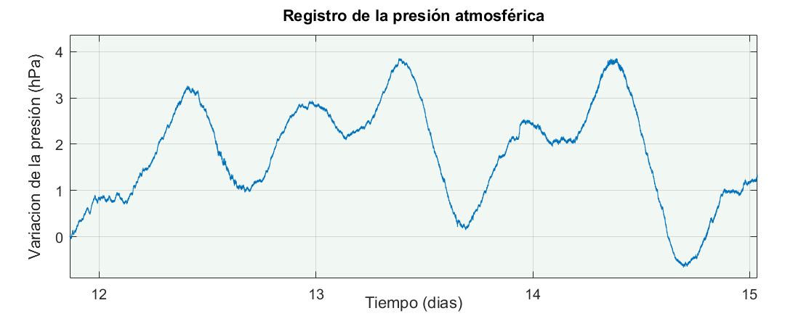 |
| Registro de la presión. Detalle. EyC. |
{kind=link}
Hay un máximo justo antes del medio día, y un mínimo a continuación. Pero fíjate en el gráfico completo, el de todos los días. Como a la mitad del día la presión desciende. Durante la mañana o la noche puede subir más, menos o estar estable, pero a mitad del día hay un descenso. Este patrón se repite todos los días y tiene nombre: se llama marea barométrica.
Para evitar este inconveniente, la presión debe medirse siempre a la misma hora del día. Aunque nosotros usaremos un método algo más sofisticado.
Sus causas no están del todo claras. Podría deberse al calentamiento de las capas altas de la atmósfera por acción del sol. O a la atracción diferencial del Sol y la Luna, como las mareas oceánicas. Algunos estudios relacionan valores de la presión anormalmente altos o bajos con la posición relativa de la luna.
Para corroborar el efecto, utilizamos la Transformada de Fourier.
| 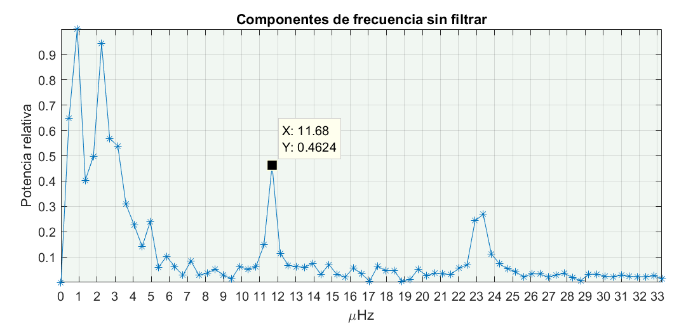 |
| Descomposición en el espacio de frecuencias. EyC. |
{kind=link}
En este blog trabajamos a menudo con ondas de radio de megahercios. También con ondas sonoras de kilohercios y alguna otra vez con vibraciones de unos pocos hercios. Las ondas de este artículo son muy lentas; con periodos de horas o de días enteros. Usaremos frecuencias de milihercios, o incluso microhercios. Esta breve tabla te ayudara:
Periodo Frecuencia
48h -> 5.8 uHz
24h -> 11.6 uHz
12h -> 23.1 uHz
8h -> 34.7 uHz
6h -> 46.3 uHz
1h -> 277.8 uHz
1min -> 16.7 mHz
1s -> 1.0 Hz
Tenemos dos picos en el espectro de frecuencias anterior. Un pico alrededor de 11.6uHz que se corresponde con 24 horas. Es el ciclo diario de la marea. Dicen que en el ecuador este ciclo es mucho más fuerte y muy preciso en el tiempo.
Seguidamente otro pico en torno a 23 o 23.5uHz (12h). Es el semidiario y no está tan definido como el diario. No he observado picos en 8 o 6 horas.
Podemos eliminar el efecto de marea para observar mejor la evolución diaria. Construiremos un filtro de ventana que anule estos dos picos en el espacio de la frecuencia. Después reconstruiremos la FFT y haremos la inversa.
| 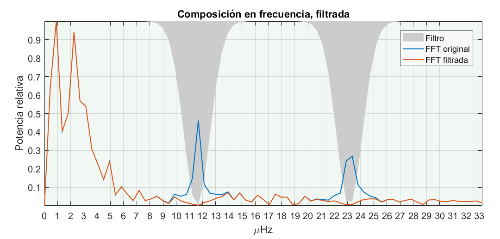 |
| Descomposición en frecuencias de la presión atmosférica, filtrada. EyC. |
{kind=link}
He usado una ventana gaussiana para anular los dos picos. Me gusta porque al transformar se transforma en otra gaussiana. Es sencilla de manejar. Vosotros podéis usar otra ventana diferente. Puede ser tentador llegar y poner a cero sin más los dos picos. Eso sería usar una ventana cuadrada, y las esquinas luego meten mucho ruido en la FFT.
Una vez hecha la transformada inversa tenemos la evolución sin las variaciones debidas al efecto marea. He dejado en gris de fondo la onda original para poderla comparar.
| 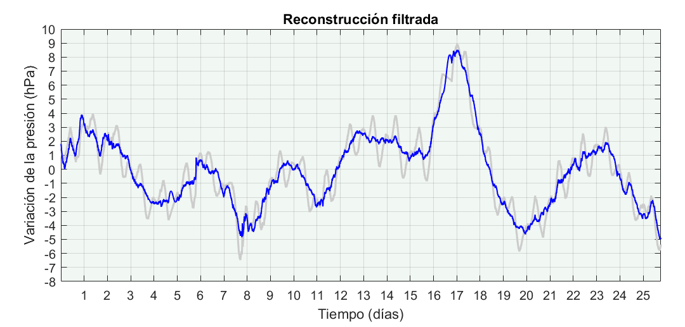 |
| Evolución de la presión atmosférica tras filtrar los efectos de marea. EyC. |
{kind=link}
No voy a interpretar el gráfico. Os diré, eso sí, que suele coincidir presión alta con cielo despejado y presión baja con nubes. Lo que no implica necesariamente frío, calor o lluvia.
En otoño el cielo despejado significa días cálidos y noches frías. Si llueve o no dependerá de la temperatura y humedad de las masas de aire cercanas, que pasarán por donde estamos o no según la fuerza y dirección de viento. Por supuesto influirá también la latitud, la altitud, la estación del año, el tipo de clima, las condiciones de inversión térmica o isla de calor en las ciudades, los microclimas y otros muchos factores.
Predecir el tiempo va más allá de mirar el barómetro.
Viento y tormenta
Como hemos visto, las bajas frecuencias (menores a 11uHz) dominan la evolución de la presión atmosférica. Para confirmarlo dibujaremos un espectrograma, como si la presión fuera un sonido de muy baja frecuencia.
| 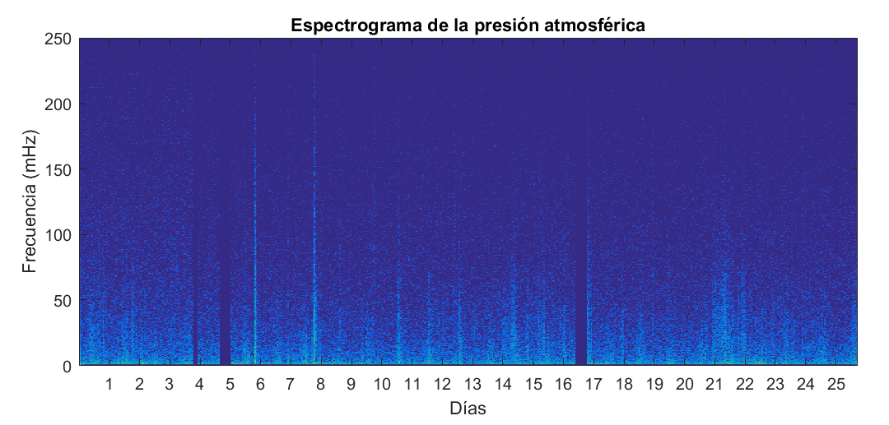 |
| Espectrograma de la presión atmosférica. EyC. |
{kind=link}
Nos llaman la atención varias franjas vacías en los días 3, 4 y 16; esos días hubo una pérdida de datos. En el gráfico de evolución anterior están interpoladas linealmente.
El otro punto interesante está en las noches de los días 5 y 7. Hay una inusual presencia de frecuencias altas. La presión local sufre cambios abruptos y rápidos. Esto significa ráfagas de viento fuerte. También se aprecian ligeramente en otras noches, pero estos dos días son especialmente fuertes.
¿A qué se deben? Fueron dos tormentas. Filtrando sólo esas altas frecuencias, vemos los cambios de presión propios durante el transcurso de una tormenta.
| 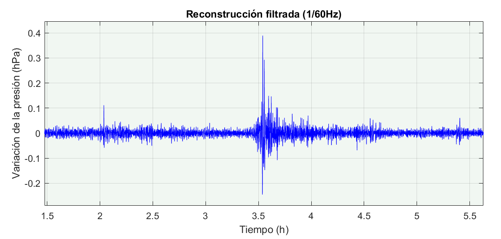 |
| Variación de alta frecuencia en la presión atmosférica recogida durante una tormenta. EyC. |
{kind=link}
¿No recuerda a un terremoto? Y esta es una suave tormenta de septiembre, con una una intensidad pico a pico de apenas 0.7hPa... ¿Os imagináis una tormenta fuerte en altamar?
Espero que os haya gustado este viaje por la electrónica digital, la aritmética, la programación y el procesado digital de señales. Los programas utilizados los tenéis en ente repositorio de GitHub: bmp280_sensor.